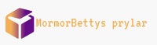

<mat-toolbar class="toolbar">
    <button *ngIf="complete" mat-icon-button [matMenuTriggerFor]="sidebar.mainMenu" type="button">
        <mat-icon>menu</mat-icon>
    </button>
    <button mat-button routerLink=""></button>
    <button type="button" mat-icon-button color="primary" routerLink="cart">
        <mat-icon matBadge="{{getQuantity()}}" matBadgeColor="accent">shopping_cart</mat-icon>
    </button>
</mat-toolbar>

<app-sidebar #sidebar="sidebar" [categories]="categories"></app-sidebar>